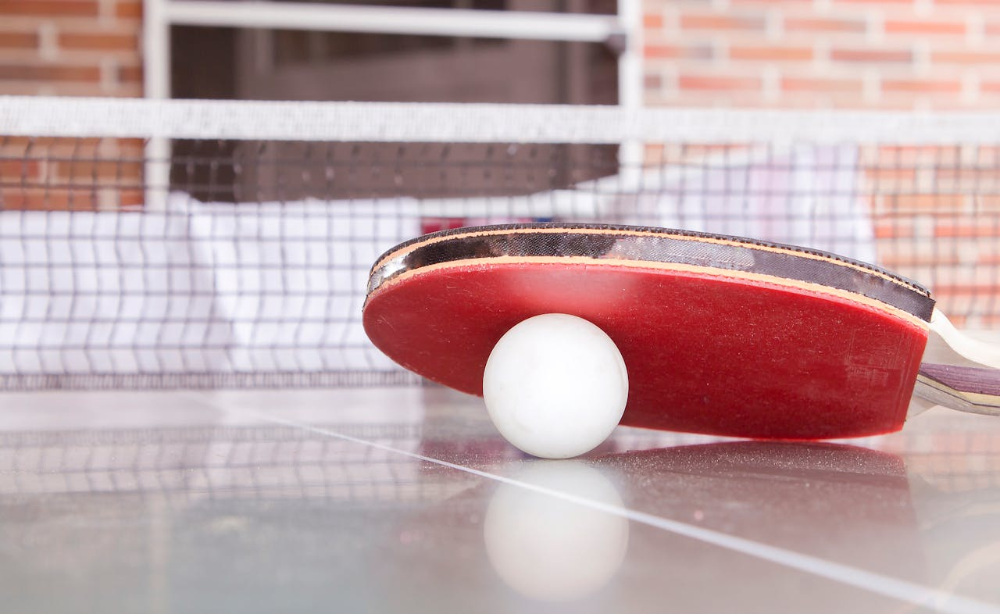
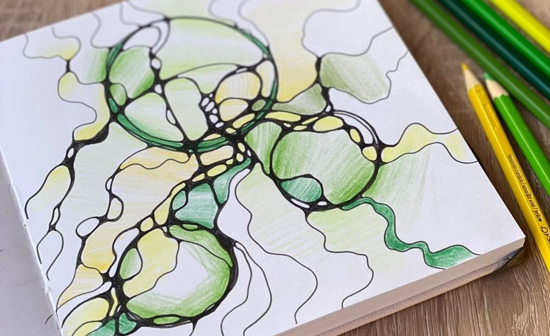
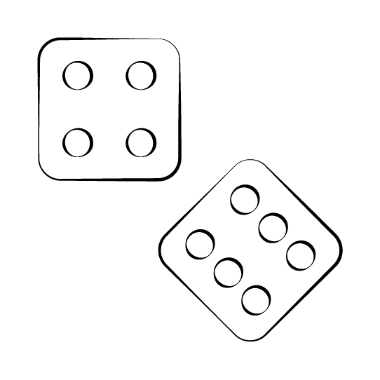
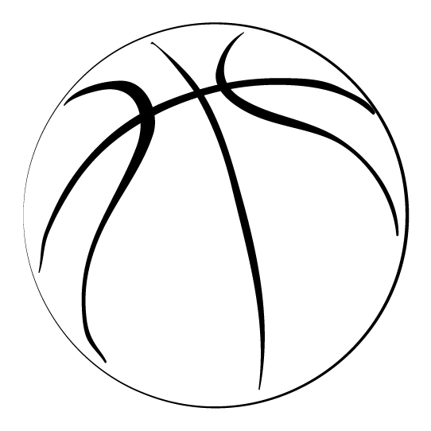
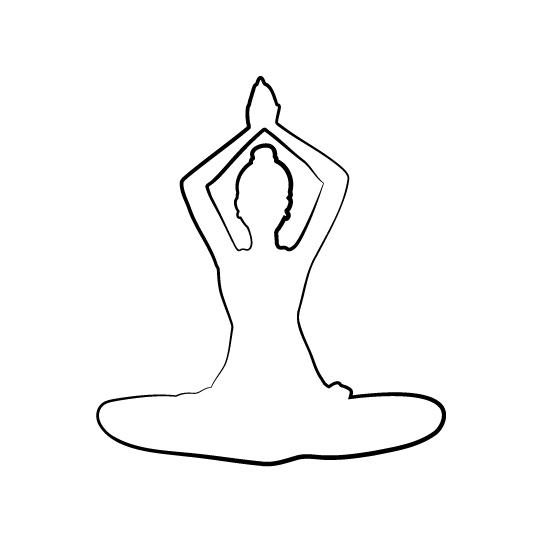
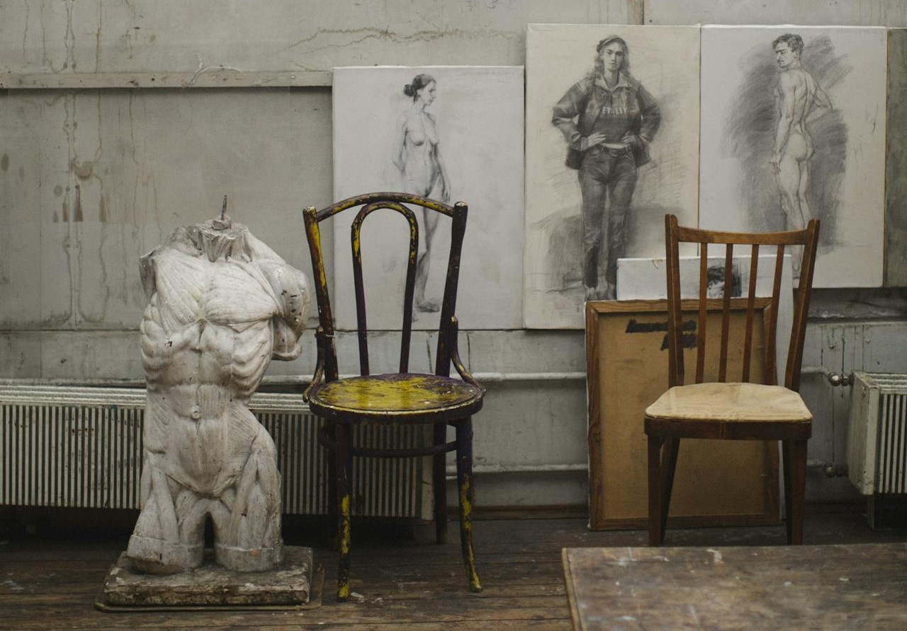

Visual
Designer
Visual
Designer

Valentina Foianu
+ My work explores the intersection between Product Design, Graphic Design, and digital experiences, translating physical concepts into visual outcomes.
+ Through projects like Musical Blueprints and Reverse Engineering, I work across the full process — from concept and design to execution and presentation. I combine structured, product-based thinking with visual aesthetics, creating work that connects physical objects with digital design, including web, branding, and visual identity.
Illustration DesigneCommerce
February 2025 - Present
Vector Illustration
1 year

Project Title
Musical Blueprints - Custom Graphic Poster Series
Website

tablou.tech
Project Overview
Musical Blueprints is a personal graphic design project that transforms musical instruments and objects into visually blueprint posters. Originally inspired by technical blueprints used by engineers and architects, these posters blend precision with aesthetic appeal. They are available in digital format with white lines on black or white backgrounds and can be customized on request, serving as decorative pieces for homes, offices, and studios.
My Role & Responsibilities
Conceptualized and designed the entire poster series from scratch using Adobe Illustrator and created mock-ups in Adobe Photoshop.
+ Developed custom blueprint designs for individual client requests.
+ Created digital-ready files optimized for print or online display.
+ Managed sales and distribution independently through my personal business.
+ Ensured consistency in visual style and high-quality aesthetic appeal.
Outcome
Demonstrates the ability to lead a multidisciplinary creative project, combining art, design, web development, and marketing into a cohesive visual and conceptual experience.
Technical Skills
+ Digital Graphic Design
+ Layout & Composition
+ Color Theory & Visual Hierarchy
+ File preparation for digital distribution
Soft Skills
+ Creative Problem-Solving
+ Time Management
+ Self-initiative & Project Management
Tools

Adobe
Illustrator

Adobe
Photoshop
Product DesigneCommerce
July 2024 - Present
UI/UX & Web Design . Brand Design . Graphic Design
1 year 8 months

Project Title
Reverse Engineering
Website
tablou.tech

Project Overview
Reverse Engineering is a conceptual design project that transforms everyday technology into visual compositions by disassembling devices and reassembling their components into structured, minimalist layouts. By exposing internal elements such as circuit boards, screens, and micro-components, the project highlights the hidden complexity behind modern devices, turning them into aesthetic, gallery-style artworks.
My Role & Responsibilities
+ Conceptualized and developed the artistic direction of the series.
+ Disassembled electronic devices and curated individual components for visual composition.
+ Designed structured, symmetrical layouts emphasizing balance and visual hierarchy.
+ Created framed artwork pieces combining industrial design with minimalist aesthetics.
+ Photographed the final pieces and handled post-production for presentation.
+ Created mock-ups to showcase artworks in realistic environments.
+ Designed and developed the project website (UI/UX and front-end implementation).
+ Managed branding, including visual identity and project positioning.
+ Created and executed social media content and marketing strategy.
+ Oversaw the full creative and production process from concept to final presentation.
Outcome
Demonstrates the ability to lead a multidisciplinary creative project, combining art direction, photography, digital design, web development, and marketing into a cohesive visual experience.
Technical Skills
+ Composition & Layout
+ Visual Hierarchy
+ Conceptual Design
+ Product Deconstruction
+ Branding & UI/UX Design
+ Web Design & Front-end Development
Soft Skills
+ Creativity
+ Attention to Detail
+ Project Management
Tools
Adobe
Illustrator
Adobe
Photoshop
+ Creative professional specializing in 3D and Visual Design, with a strong focus on Architectural Visualization, Graphic Design, Branding.
+ Skilled in managing projects end-to-end, from concept to final delivery, combining technical precision with aesthetic sensibility.
+ Team-oriented, with clear communication and attention to detail, delivering high-quality results across design projects.
3D Design & Visual DesignFreelance
February 2024 - Present
Founder & Designer
2 years

Overview
+ Independent 3D Designer with 8 years specializing in Architectural Design. Focused on creating 3D models, visualizations, and renderings for architectural projects, combining technical expertise with creative problem-solving.
Website
3dconcept.services
My Role & Responsibilities
+ Conceptualized and developed design projects from initial idea to final execution.
+ Developed 3D models and photorealistic renderings for architectural and product visualization.
+ Produced 2D graphics for digital and print materials.
+ Designed and built project websites, maintaining them and ensuring branding consistency.
+ Developed visual identities and branding for personal projects and clients.
+ Applied UI/UX principles to enhance digital presentations and online experiences.
+ Managed end-to-end project workflows, including client collaboration and feedback integration.
+ Managed post-production, photography, and mock-ups for high-quality presentation.
Outcome
Successfully managed complete design workflows from concept to final delivery, integrating architectural 3D modeling with visual storytelling, digital design, and client collaboration.
Technical Skills
+ Architectural 3D Modeling & Photorealistic Rendering
+ Product Visualization
+ Branding
+ Digital Illustration
+ Graphic Design for Digital & Print
+ UI/UX Design & Web Design
+ Website Design & Maintenance
Soft Skills
+ Creative Problem-solving
+ Client Collaboration
+ Project Management
Tools

Notion
.

Figma
.
Adobe
Illustrator
Adobe
Photoshop

Visual Studio
Code

Autodesk
3DsMax

Chaos
Corona Renderer

Microsoft
Teams
3D Architectural DesignJob
March 2018 - May 2022
Creative Producer
4 years 2 months

Overview
+ 3D Creative Producer specializing in architectural visualization and design for residential and commercial projects.
+ Skilled in creating high-quality 3D models, realistic renderings, and presentation materials, combining technical precision with creative direction.
Website

Vego Holdings
My Role & Responsibilities
+ Analyzed design project requirements to determine the optimal implementation approach.
+ Created 3D models, applied texturing, and lighting according to project specifications, ensuring fidelity and attention to detail.
+ Executed rendering processes, including environmental setup, to produce realistic interior and exterior images.
+ Delivered high-quality renders for residential and commercial projects, including top-view presentations.
+ Applied post-production and effects adjustments to enhance final image aesthetics and highlight project characteristics.
+ Collaborated with architects and team members to maintain design consistency and alignment with project vision.
+ Conceptualized and designed print materials (posters, flyers, brochures, business cards) in line with brand guidelines.
+ Developed and edited internal and external presentations, integrating visual storytelling techniques.
+ Created 2D designs for web elements (icons, logos, illustrations) to enhance brand visibility.
+ Managed multiple projects simultaneously, ensuring deadlines were met and quality standards maintained.
+ Contributed to professional events in architecture and urbanism, capturing photography and video content to document projects and enhance communication and marketing efforts.
Projects
Centru Acvatic - Parc Pantelimon - 3D Exterior Renders
Amfiteatru PS4 - 3D Exterior Renders
Spital Olteniței nr.9 - 3D Exterior Renders
Șoseaua Nordului - 3D Exterior Renders
Poștalionului 69-71 - 3D Exterior Renders
Mânăstirea Cocoș Niculițel - 3D Exterior Renders
Giurgiului 27 - 3D Exterior Renders
Gradinița Sector 6 - Environment Setup + 3D Exterior Renders
Drumul Binelui 168-170 - 3D Interior + Exterior Renders
Dealul Cucului 34-36 - 3D Interior + Exterior Renders
Candiano Popescu - 3D Exterior Renders
Broșteanu - 3D Exterior Renders
Dealul Cucului 36-38 - 3D Interior Renders
Dealul Aluniș 37-49 - 3D Interior Renders
Drumul Binelui 168-170 - 3D Interior Renders
Popești Leordeni - Biruinței 49 - 3D Interior Renders
Aurel Perșu 112-114 - 3D Interior Renders
Crivățului - 3D Interior Renders
Outcome
Successfully delivered high-quality visual solutions for residential and commercial architectural projects, combining technical accuracy, creative direction, and aesthetic excellence. Contributed to a consistent, visually compelling representation of designs while managing multiple projects and enhancing brand and project presentation.
Technical Skills
+ 3D Modeling & Rendering & Texturing & Lighting
+ Interior & Exterior Visualization
+ Post-production
+ 2D Graphic Design
+ Presentation Design
Soft Skills
+ Creative Problem-solving
+ Attention to detail
+ Collaboration with architects and clients
+ Project Management
Tools
Autodesk
3DsMax

Autodesk
AutoCAD

Chaos
V-Ray
Chaos
Corona Renderer
Adobe
Photoshop
Adobe
Illustrator

Twinmotion
.

Lumion
.

Asana
.

Microsoft
Word

Microsoft
Excel

Microsoft
PowerPoint

Microsoft
Outlook

Microsoft
OneDrive
Travel ServicesJob
October 2016 - March 2018
French Service Advisor - Back Office
1 year 5 months
Overview
+ French Service Advisor with experience supporting international travel operations and internal sales teams.
+ Specialized in coordinating with the French sales team, managing bookings and travel-related data, and maintaining accurate and up-to-date web content for flights, hotels, and offers.
+ Focused on delivering high-quality support and ensuring smooth internal processes.
Website

Webhelp / Concentrix
My Role & Responsibilities
+ Advised internal sales team on worldwide travel, flights, and hotel arrangements.
+ Addressed technical questions and solved booking issues via email, supporting the French team in client operations.
+ Collected, analyzed, and compared travel-related data to ensure accurate and efficient internal support.
+ Updated travel web pages and advertising content, including text, images, prices, offers, and booking information.
+ Coordinated with cross-functional teams to maintain consistency and accuracy of information.
Outcome
Ensured accurate and timely support for the French sales team, improving internal efficiency and maintaining high-quality travel and booking information for clients. Contributed to consistent and up-to-date online travel content, enhancing operational reliability.
Technical Skills
+ Data Management
+ Content Updates
+ Travel Booking Systems
+ E-mail Communication
+ Process Coordination
Soft Skills
+ Team Collaboration
+ Attention to detail
+ Project Management
Tools
Microsoft
Word
Microsoft
Excel
Microsoft
PowerPoint
Microsoft
Outlook
+ Background in 3D and visual design, with a focus on architectural visualization and a growing interest in digital design areas such as branding, web, and UI/UX.
+ Bringing together technical execution and visual thinking, to create clear, structured, and consistent design outcomes across different formats.
Graphic DesignSkill
2024 - Present
Illustration Design & Image Editing
2 years
Portfolio

Behance
Outcome
Created cohesive visual materials across digital and print formats, combining strong composition, typography, and color principles. Delivered clear and engaging visuals aligned with brand direction and communication goals.
Technical Skills
+ Digital Illustration
+ Print design ( Posters, Flyers, Brochures, Business Cards )
+ Social media visuals and digital assets
+ Layout & Composition for print & digital
+ Typography & Visual Hierarchy
+ Color Theory Application
+ Mock-ups & Visual Presentation Design
+ Photo Editing & Basic Post-production
Soft Skills
+ Visual Storytelling
+ Concept Development
+ Attention to Detail
+ Adaptability across styles and formats
+ Interpretation of Briefs
+ Organization & File Management
+ Time management
Tools
Adobe
Illustrator
Adobe
Photoshop

Adobe
InDesign
Brand DesignSkill
2023 - Present
Brand Identity & Brand Strategy
3 years
Outcome
Built clear and consistent brand identities by combining visual direction with strategic thinking. Translated ideas into cohesive design systems, supported by strong composition, structure, and attention to detail.
Technical Skills
+ Brand Identity Development ( Theme, Naming, Logo Design )
+ Color Theory, Typography, Font Pairing
+ Iconography & Visual Systems
+ Brand Strategy ( Purpose, Vision, Mission, Values )
+ Positioning & Brand Personality
+ Communication Style, Tagline Development
+ Layout & Composition
Soft Skills
+ Strategic Thinking
+ Concept Development
+ Active Listening
+ Interpretation of needs and ideas
+ Clear Communication
+ Attention to Detail
Tools
Notion
.
Figma
.
Adobe
Illustrator
Adobe
Photoshop
Web DesignSkill
2023 - Present
UI/UX Design & HTML/CSS
3 years
Portfolio

Git-hub
Outcome
Built structured and visually consistent web interfaces by combining technical implementation with design thinking. Translated brand identity into functional layouts, focusing on clarity, usability, and user experience.
Technical Skills
+ HTML ( HyperText Markup Language ) . CSS ( Cascading Style Sheets ) - ( building and styling web pages )
+ Website Builders & CMS ( Content Management System ) - Wix | Webflow ( create, manage, modify digital content without coding expertise )
+ File Organization ( keeping assets clean and organized )
+ Brand Consistency ( designing web interfaces that match a company’s visual identity )
+ Visual Hierarchy ( prioritizing content to make navigation and reading intuitive )
+ Design Intuition ( developing a sense of what works visually and functionally )
+ Versatility ( shifting easily between technical, creative, and user-centered thinking )
+ Problem Ownership ( taking initiative to improve both aesthetics and functionality )
+ Independence ( managing projects with minimal supervision )
Soft Skills
+ Creative Thinking
+ Analytical Thinking
+ Attention to Detail
+ Decision-Making
+ Curiosity & Self-Learning
+ Time Management
+ Patience
+ Perseverance
+ Focus
+ Empathy
Tools

Wix
.

Webflow
.
Visual Studio
Code
UI/UX DesignSkill
2023 - Present
User Interface & User Experience Design
3 years
Outcome
Designed clear and intuitive interfaces by applying basic UX principles and visual structure. Focused on usability, consistency, and user flow to create simple and effective digital experiences.
Technical Skills
+ User Interface ( UI ) Design Skills
+ Visual Hierarchy and Layout ( designing clear, organized, and attractive interfaces )
+ Typography and Color Theory ( choosing typefaces and color palettes that enhance readability and usability )
+ Component-Based Design ( building reusable design systems and UI kits - buttons, modals, cards )
+ Responsive Design ( creating designs that adapt seamlessly across devices - mobile, tablet, desktop )
+ User Experience ( UX ) Design Skills
+ User Research ( conducting interviews, surveys, and usability tests to understand user needs )
+ User Journey Mapping ( charting how users move through a product and identifying friction points )
+ Information Architecture ( structuring content and navigation logically for intuitive use )
+ Wireframing and Prototyping ( translating ideas into low- and high-fidelity mockups and clickable prototypes )
+ Usability Testing ( evaluating how real users interact with your product and improving it based on feedback )
+ Problem-Solving ( creating human-centered solutions for functional and emotional user needs )
+ Behavioral Psychology Insight ( understanding cognitive load, habit loops, and decision-making biases )
+ Data-Informed Design ( using analytics and A/B testing to refine features or layouts )
+ Accessibility ( designing inclusive experiences for users of all abilities )
+ Iterative Design Mindset ( continually refining based on feedback and testing )
+ Mind-Mappings
Soft Skills
+ Time and Project Management ( meeting deadlines across multiple design cycles and iterations )
+ Communication & Collaboration ( working with developers, product managers, to align on goals and solutions )
+ Empathy
+ Problem-Solving
+ Adaptability
+ Curiosity & Self-Learning
Tools
Notion
.

Trello
.
Figma
.

Typeform
.

Jitter
.

OpenAI
Chat GPT
Digital IllustrationSkill
2020 - Present
Technical & Colorful Artwork
5 years
Portfolio
Behance
Outcome
Developed visually engaging illustrations by combining composition, color, and concept. Translated ideas into expressive visuals adapted for both digital and print formats.
Technical Skills
+ Visual Storytelling ( learning how to communicate ideas through imagery )
+ Composition & Layout
+ Color Theory ( contrast, harmony, emotion in palettes )
+ Style Development ( unique artistic voice and identity )
+ Portfolio Development
Soft Skills
+ Creative Problem-Solving
+ Attention to Detail
+ Decision-Making
+ Self-Learning & Consistency ( practicing regularly, improving skills, and learning independently )
+ Critical Thinking ( making purposeful visual decisions )
+ Iterative Thinking ( revising and refining ideas over time )
+ Focus
+ Patience
Projects
Tools
Adobe
Illustrator
Interior DesignSkill
2020 - 2022
Modeling & Rendering
2 years
Outcome
Developed interior concepts and visualizations through detailed 3D modeling, mock-ups, and photorealistic renders. Translated spatial ideas into clear visual presentations, focusing on composition, materials, and atmosphere.
Technical Skills
+ Spatial Awareness ( understanding how to use space effectively and creatively )
+ Color Theory & Mood Creation ( using color schemes to influence atmosphere )
+ Lighting setup and scene composition
+ Material & Texture Selection ( balance between function and aesthetics )
+ Interior concept design and moodboards
+ 3D modeling and photorealistic rendering
+ Mock-ups and visual presentation
+ Interior styling and detailing
Soft Skills
+ Spatial Thinking
+ Concept Development
+ Decision-Making
+ Visual Coherence
+ Adaptability
Tools
Autodesk
3DsMax
Chaos
Corona Renderer

Affinity
Designer
3D ArtistSkill
2019 - 2021
Gaming Industry
2 years
Portfolio

ArtStation
Outcome
Created hard-surface 3D assets with clean topology and optimized geometry, focusing on structure, proportion, and functionality. Developed models suitable for real-time environments, combining technical accuracy with visual clarity.
Technical Skills
+ Hard-Surface Props Modeling
+ Polygonal Modeling Proficiency ( creating clean, efficient geometry for complex forms )
+ Topology Optimization - Ensuring edge flow and polygon counts are game-engine friendly
+ High-to-Low Poly Workflows ( transfer the details from the high-poly model to the low-poly model by baking normal maps, ambient occlusion maps, and other texture maps )
+ Mechanical Design Thinking ( understanding function and structure behind vehicles, weapons, e.t.c. )
+ Real-Time Rendering Understanding
+ UV Unwrapping and Texturing
+ PBR texturing ( Physically-Based Rendering ) - ( creating realistic materials )
+ Iteration & Critique ( receiving feedback and improving work )
+ Portfolio Development
Soft Skills
+ Concept Development
+ Patience & focus
+ Time Management
+ Precision & Detail
Tools

Substance
Painter

Marmoset
Toolbag

Keyshot
.
Artistic AnatomySkill
2016 - 2017
Figure & Body Drawing
1 year
Outcome
Created hard-surface 3D assets with clean topology and optimized geometry, focusing on structure, proportion, and functionality. Developed models suitable for real-time environments, combining technical accuracy with visual clarity.
Technical Skills
+ Accurate Figure Drawing ( structure, form )
+ Gesture & Movement ( dynamic poses )
+ Understanding of Volume & Form
+ Knowledge of Muscle & Bone Structure
+ Shape Simplification ( breaking complex into basic forms )
+ Light & Shadow
+ Comparative Observation ( spotting differences to improve accuracy )
Soft Skills
+ Discipline
+ Symmetry
+ Precision
+ Time Management
+ Problem-Solving
Source
+ Across a series of courses in 3D Design, Web and UI Design, Graphic Design, Digital Illustration, Interior Design , Fashion Design, I developed a strong foundation in both creative and technical processes.
+ These experiences allowed me to translate ideas into visually compelling outcomes, combining careful planning, aesthetic judgment, and adaptability to new techniques and feedback.
Overview
+ My goal was to overcome a mental limitation.
+ The project focused on not just one, but as many websites as I could create to learn how to build my own programming workflow.
+ My main responsibilities were to cultivate patience and motivation.
+ The first steps were to engage in the process and then focus on understanding the theory.
+ The biggest challenge was to keep going no matter what.
+ I use front-end development because it helps me easily put my ideas into practice, as I have no limits in the creative process. Over time, it has become a tool I can rely on to help me with my business projects.
+ The technique offered resilience, courage, confidence.
Technical Skills
+ Computer Basics
+ Git Basics
+ HTML Foundations
+ CSS Foundations
+ Flexbox
Soft Skills
+ Problem-Solving
+ Attention to Detail
+ Organization
+ Structure
+ Time Management
+ Self-Learning
+ Logic
+ Creativity
+ Self-Management
+ Discipline
Tools
Visual Studio
Code
Overview
+ My goal was to integrate 3D into the 2D world, expanding my knowledge in the field of product design.
+ The project focused on was ‘tablou.tech’.
+ My main responsibility was to blend design with development and management.
+ The process began with learning about manufacturing products.
+ The most difficult part was moving forward after following the simple steps.
+ I use the techniques on this course because they offer a clear structure in building a product from start to finish.
+ This method allowed me to maintain simplicity in a complex project.
Technical Skills
+ Design Elements & Principles
+ Research Process
+ Ideate & Analyze
+ Ideate and Analyze
+ Information Architecture
+ Content Strategy
+ Design & Prototype
+ Front-end Development Basics
Soft Skills
+ Planning & Management
+ Organization
+ Structure
+ Time Management
Overview
+ My goal was to was to learn another area of design to help me develop complex projects.
+ The project focused on was 'case study'.
+ My main task was to be open to new things.
+ The process began with creating a theme to work on.
+ The biggest challenge was to connect my creative ideas with the concept of functionality.
+ I use User Experience Design every time I build a project because it helps me understand the prospect better.
+ This method offered structure, flexibility, connection.
Technical Skills
+ Foundations of UX design
+ Usability
+ User Research
+ User Journeys
+ Visual Design
+ Wireframes & Interactive Prototypes
+ User Testing
+ Interaction design
+ Data Analysis
Soft Skills
+ Empathy
+ Active Listening
+ Collaboration
+ Communication
+ Adaptability
+ Creativity
+ Accountability
Overview
+ My goal was to learn app development.
+ My main responsibility was to create interfaces for mobiles apps.
+ The project focused on ‘app interface’.
+ The process began with testing ideas.
+ The biggest challenge involved the technical part in prototyping the mobile version.
+ I use this method to prototype an idea from my personal projects that I want to expand.
+ This method allowed me to discover unlimited possibilities in every domain.
Technical Skills
+ Mobile Design Principles
+ Building mobility - core development approaches
+ The Internet of Things
Soft Skills
+ Problem-Solving
+ Critical Thinking
+ Creativity
+ Attention to Detail
+ Creativity
+ Collaboration
+ Communication
+ Patience
+ Time management
Overview
+ My goal was to keep up to date with the latest developments in this field.
+ I explored new ways of combining technology with design.
+ The most difficult part was to familiarize myself with the terms and concepts involved in the field of technology.
+ I chose to integrate this field into my regular design practice because I want to find solutions quickly and adapt to new ways of working.
+ This field has helped me add new information to old ideas in order to change my mindset.
Technical Skills
+ Application of AI to a specific context
+ AI in Action
Soft Skills
+ Curiosity
+ Open-Mindedness
+ Decision-Making
+ Resilience
+ Systematic Thinking
+ Teamwork
+ Problem Reframing
+ Self-Discipline
Overview
+ My goal was to understand how people interact with products.
+ My main task was to test ideas by following a few clear steps.
+ The process began with combine functionality (context, user goals, mental models) and aesthetics.
+ The challenge was to understand human behavior when interacting with a machine.
+ I decided to use the information from the Interaction Design course because it makes people's lives considerably easier.
+ This course helped me understand the importance of usability and functionality in human life, as well as intuition and awareness of what is relevant.
Technical Skills
+ User Interface & User Goals
+ User Experience
+ Design Process
+ Research
+ Design Framework
+ Usability
Soft Skills
+ User-Centered Mindset
+ Flexibility
+ Perseverance
+ Patience
+ Adaptability
Overview
+ My goal was to understand product conceptualization.
+ My main responsibility was to understand and transform user needs into a functional product that they would use.
+ The process began with the creation of user journey maps, followed by the development of wireframes for the development of a prototype.
+ The challenge was to create a Persona based on assumptions, general ideas, tasks, and objectives that would correspond to the person who would use the future product.
+ I decided to integrate interactive prototypes into every project so that I could transmit exactly the product I intend to build.
+ This experience provided me with the opportunity to transform the theoretical part into a product or service idea using the technical part (Figma).
Technical Skills
+ User Interface
+ Figma
Soft Skills
+ Visual Communication
+ Flexibility
+ Organization
+ Feedback Receptivity
+ Decision-Making
Tools
Figma
.
Overview
+ My goal was to learn the program (Figma).
+ The project focused on ‘creating a small interface’ in Figma.
+ I focused on gathering information from professionals and applying it to my project.
+ The obstacle I faced was learning how frames work.
+ I decided to continue learning the program because it has an intuitive interface, was easy and fun to learn, and helped me turn my ideas into projects.
+ Learning this program has helped me create new workflows in my work.
Technical Skills
+ Frame and Auto-Layout Management
+ Component Creation
+ Wireframing
+ Prototyping
+ Feedback & Iteration
Soft Skills
+ Organization
+ Structure
+ Logic
Tools
Figma
.
Overview
+ My goal was to learn The Design Thinking Process to incorporate it into my work.
+ My main responsibility was to find out what people need from a service or product.
+ The process began with drafts.
+ The biggest challenge involved creating surveys.
+ I decided to integrate User Experience Design into my workflow because connection is the most important aspect of creating a product.
+ This approach has led to solid methods for future projects.
Technical Skills
+ User Experience Design Process
+ The Design Thinking process - 5 Stages of Design Thinking ( Empathize . Define . Ideate . Prototype . Test )
+ User Research
+ UX Research Methods & Tools
+ UX Research Analysis
+ User Interviews
+ Card Sort
Soft Skills
+ Organization
+ Structure
+ Logic
Overview
+ My goal was to understand what method to use to link the research part to the interface design, fully reproducing the product requested by customers.
+ I focused on Human-Computer Interaction.
+ My main responsibility was to design an intuitive and user-friendly interface.
+ The biggest challenge was the brand design methods.
+ I decided to create more and more interfaces, playing with more and more visual design elements to transform my vision into a creative, yet functional and easy-to-use product.
+ This method has allowed me to integrate new elements that I can use in different areas.
Technical Skills
+ User Interafce Design Process
+ User Interface Elements
+ User Flows ( diagrams that display the complete path a user takes when using a product )
+ Design Patterns
+ HCI ( Human-Computer Interaction )
+ Wireframing
+ Basic Shapes & Dimensions
+ Typography & Typesetting ( preparing text and images for printing )
+ Color Theory
Soft Skills
+ Organization
+ Structure
+ Logic
Overview
+ My objective was to learn Zbrush.
+ The project focused on was ‘knives collection’.
+ My main responsibility was to use the program to create the desired concept.
+ The process began with practicing the methods learned (modeling, texturing, rendering).
+ The biggest challenge involved integrating the model into other programs.
+ I chose to use 3DsMax to express my ideas by creating realistic renderings.
+ This program allowed me to have freedom in creating projects.
Technical Skills
+ Module 2: Gaming — Character Animation
+ Topology
+ Low Poly & High Poly Assets
+ UVs
+ Baking & Texture
+ xNormal
+ Photoshop Post-Bake Tools
+ Mapping
+ Sketchfab & Scene Setup
+ TopoGun, Marmoset Toolbag, Substance Painter Introduction
+ Workflow for PBR
+ Render & Post-Production
+ Autodesk 3DsMax - Modeling
Soft Skills
+ Technical Thinking
+ Precision & Consistency
+ Adaptability
+ Iterative mindset ( working through revisions )
Tools
Autodesk 3DsMax
.
Substance
Painter
Marmoset
Toolbag
Overview
+ My objective was to learn about 3D industry.
+ My main responsibility was to focus on the basics until I gained the necessary experience to expand into other areas.
+ The biggest difficulty was optimizing complex models while maintaining visual quality.
+ This course helped me to develop adaptability, creativity and adapt to feedback.
Technical Skills
+ Module 1: Architecture — Interface Introduction
+ Main Toolbar
+ Command Panel
+ Modeling Complex Objects
+ Turbosmooth
+ Mapping
+ Unwrap UVW
+ Types of Textures
+ Texture Symmetry
Soft Skills
+ Attention to Detail
+ Spatial Thinking
+ Patience & Focus
+ Iterative mindset ( working through revisions )
Tools
Autodesk 3DsMax
.
Overview
+ My objective was to learn the fundamentals of traditional sculpture.
+ My main responsibility was to focus on mastering basic sculpting techniques until I gained the necessary experience to explore more complex forms and materials.
+ The biggest difficulty was achieving precision and proportion while working with different materials and textures.
+ This course helped me develop adaptability, creativity, patience, and the ability to respond to constructive feedback.
Technical Skills
+ Charcoal Drawing
+ Material Handling
+ Modeling Techniques
+ Anatomical Knowledge
+ Composition
+ Proportion
+ Innovation
+ Expressive & Conceptual Thinking
Soft Skills
+ Problem-Solving
+ Spatial Awareness
+ Patience & Focus
+ Perseverance
Overview
+ My goal was to develop my creativity.
+ I explored team work.
+ I aimed to achieve new Graphic Design methods from professionals.
+ The learning experience was playful and creative.
+ The biggest challenge involved charcoal sketches.
+ From this experience I learned drawing and collaboration.
+ This course helped me develop discipline, structure and social skills.
Technical Skills
+ Visual Communication
+ Composition & Layout
+ Color Theory
+ Concept Development
+ Design Process ( earning to brainstorm, sketch, revise, and finalize a project )
Soft Skills
+ Problem-Solving
+ Creativity
+ Attention to Detail
+ Time Management
+ Collaboration
+ Feedback & Critique
Overview
+ My objective was to learn the fundamentals of web design.
+ My main responsibility was to focus on mastering the basics of HTML, CSS, and interface layout until I gained the necessary experience to expand into interactive and responsive design.
+ The biggest difficulty was creating visually appealing layouts while ensuring usability and functional consistency across different devices.
+ This course helped me develop adaptability, and the ability to incorporate feedback into design improvements.
Technical Skills
+ HTML ( Structure of Web Pages )
+ CSS ( Styling Web Pages )
+ Color Theory
+ Typography
Soft Skills
+ Problem-Solving
+ Creativity
+ Attention to Detail
Overview
+ My objective was to learn Adobe Illustrator and Digital Skills.
+ The journey focused on creating digital illustrations and vector-based designs.
+ My main responsibility was to use the program to bring the desired concepts to life.
+ The process began with practicing the methods learned ( vector drawing, typography, color theory, and layout composition ).
+ The biggest challenge involved maintaining precision and consistency while experimenting with different design styles.
+ I chose to use Adobe Illustrator to express my ideas visually, creating clean and professional designs.
+ This program allowed me freedom in experimenting with aesthetics and concepts.
Technical Skills
+ Instruments & Page Properties & Main Tools
+ Vector Graphics & Text & Font & Typography
+ Color Management
+ Illustration
+ Preparing Documents for Printing
+ Logo Concept Symbols
+ 3D Effect
+ Filters
Soft Skills
+ Creativity & Visual Thinking
+ Ability to accept and incorporate feedback
+ Organization & File Management
+ Adaptability & Flexibility
Tools
Adobe
Illustrator
Overview
+ My objective was to learn Adobe Photoshop.
+ The journey focused on image manipulation and digital editing.
+ My main responsibility was to use the program to enhance and transform images according to the desired concept.
+ The process began with practicing the methods learned ( masking, retouching, color correction, compositing, and layering techniques ).
+ The biggest challenge involved maintaining realism and consistency while combining multiple elements in complex compositions.
+ I chose to use Photoshop to express my ideas by creating visually compelling and polished images.
+ This program allowed me the freedom to experiment with creative edits and refine my visual storytelling.
Technical Skills
+ Module 1: Instruments & Page Properties & Main Tools & Gradient Tools & Paths & Transform Tools & Text & Font & Image Properties
+ Color Adjustments & Layers & Blending Effects & Lights & Masks & Brushes
+ Advanced Selections and Selection Modes for Complex Surfaces
+ Simulating Surfaces and Texturing Images Using Other Images & GIF Animation
+ Program Automation Capabilities & Batch System
+ Module 2: Main Elements & Text & Basic Features & Fonts & Document Properties
+ Layout & Bezier Curve Editing Modes & Adjustments & Transformations
+ Color Corrections & 3D Effects
+ Printing Settings for Various Advertising Materials
+ Book Cover & Album Cover
+ Corel Draw
Soft Skills
+ Problem-Solving
+ Creativity
+ Patience & Perseverance
+ Adaptability & Flexibility
Tools
Adobe
Photoshop
Painting & GraphicsCourse
2011
Visual Poetry
1 year
Overview
+ My objective was to learn and experiment techniques in painting and traditional graphics.
+ The journey focused on creating original artworks using various media and traditional methods.
+ My main responsibility was to use different tools and materials to bring my concepts to life on paper and canvas.
+ The process began with practicing the techniques learned ( drawing, painting, shading, color mixing, composition ).
+ The biggest challenge involved achieving precision and harmony in colors and forms across different artworks.
+ I chose traditional media to express my ideas through tactile and visual experiences.
+ This approach allowed me freedom to explore styles and develop personal artistic expression.
Technical Skills
+ Artistic Composition
+ Surface Preparation
+ Painting Styles
+ Landscape Painting
+ Observation Skills
+ Color Mixing & Theory
+ Perspective & Depth
+ Brushwork Techniques
+ Light & Shadow
Soft Skills
+ Creativity & Expression
+ Patience
+ Focus
Fashion DesignCourse
2010 - 2012
Imaginative Fabrication
2 years
Overview
+ My objective was to learn the fundamentals of Fashion Design.
+ The journey focused on creating original clothing concepts and collections.
+ My main responsibility was to develop sketches, patterns, and prototypes to bring the desired designs to life.
+ The process began with practicing the methods learned ( sketching, pattern making, fabric selection, and draping techniques ).
+ The biggest challenge involved manufacturing the designs while maintaining the intended fit, structure, and aesthetics.
Technical Skills
+ Sketching
+ Technical Drawings
+ Illustration
+ Fabric Knowledge & Measurement & Sizing
+ Trend Analysis
+ Sewing Machine Proficiency
+ Budget Management
+ Fashion Presentations
+ Product Development
Soft Skills
+ Attention to Detail
+ Creativity
+ Critical Thinking
+ Adaptability
+ Time Management
+ Team Collaboration
+ Developed strong language and analytical skills through studies in French language and literature.
+ This foundation strengthened my communication, critical thinking, and cultural awareness, supporting both creative and professional pursuits.
Languages
+ Romanian - Native
+ French B2 - Upper Intermediate
+ English B2 - Upper Intermediate
Philology SectionHigh-School
2008 - 2012
French Major
4 years
Languages
+ Romanian - Native
+ French B2 - Upper Intermediate
+ English B2 - Upper Intermediate
Driving License
2012 - Present
Category B
13 years
+ I enjoy a mix of physical, creative, and strategic activities that keep me balanced and curious.
+ From sports like basketball and ping-pong to creative pursuits such as drawing, neurographica, and photography, I cultivate focus, discipline, and visual thinking.
+ Engaging in boardgames, puzzles, reading, and yoga helps me develop problem-solving skills, patience, and mindfulness, enriching both my personal growth and professional creativity.
Ping-PongHobby
2025 - Present
Strategic Thinking
1 year

Soft Skills
+ Precision
+ Attention to Detail
+ Quick Thinking
+ Focus
+ Quick Decision-Making
+ Concentration
+ Self-Control
+ Self-Discipline
+ Stress Management
NeurographicaHobby
2025 - Present
Graphical Language
1 year

Soft Skills
+ Emotional Balance
+ Self-Awareness
+ Creativity
+ Mindfulness
+ Intuition
+ Resilience
+ Confidence
+ Problem-Solving
+ Stress Management
BoardgamesHobby
2020 - Present
Strategic & Tactical Thinking
5 years

Soft Skills
+ Strategic Thinking
+ Decision-Making
+ Negotiation
+ Social Interaction
+ Cognitive Growth
+ Adaptability
+ Patience
+ Risk Evaluation
+ Conflict Management
BasketballHobby
2016 - Present
Teamwork & Tactical Thinking
10 years

Soft Skills
+ Visual Strategy
+ Planning
+ Teamwork
+ Commitment
+ Cooperation
+ Self-Awareness
+ Precision
+ Communication
+ Stress Management
YogaHobby
2016 - Present
Inner Awareness
10 years

Soft Skills
+ Gratitude & Acceptance
+ Kindness & Inner Calm
+ Patience & Emotional Regulation
+ Discipline
+ Decision Making
+ Concentration
+ Creativity
+ Body Awareness
+ Stress Management
Drawing & PaintingHobby
2010 - 2016
Sketching . Charcoal & Pencil Techniques . Acrylic & Oil Painting
6 years

Soft Skills
+ Visual Analysis
+ Observation
+ Creative Problem-Solving
+ Focus
+ Resilience
+ Imagination
+ Confidence in Self-Expression
+ Awareness
+ Stress Management